All right. So after 4.5 years of not visiting (our last visit before this was f*cking Christmas Time 2017). And....they still have reservations here. I know when all the theme parks opened up after COVID, one restriction put in place was reservations, which....was BY FAR the most annoying COVID regulation. Making those was FAR more annoying than having to wear a mask! Well, most places got rid of them after a few months of things going back to normal. But not Disneyland, who just took this as an oppertunity to make this the new normal. *Sigh*
So yeah. Our last visit was 4.5 years ago before today. I mean, prior to this, I had visited Tokyo Disneyland & Disney Sea (miss that place so much) more recently than the Disneyland Resort right in my own backyard! And not because of lack of any new additions to the Disneyland Resort (Spoiler Alert: It's all money and priorities). So just a heads up. This is going to be a MASSIVE update covering ALL of the new stuff that's been added to the Disneyland Resort since 2017.
How's it going Disneyland!? Long time, no see. So much to catch up on and I'm really excited to be trying all the stuff you've added (Yes, I'm late to the party).
All right. We made our reservations for Space Mountain. Now what should we actually do first?
Only a 10 minute line for Star Tours!? Yeah! Let's do that before it grows a monstrously long line and requires a reservation! =)
Not one of the rides I've missed, or is new for me. But I'm still happy to be doing this again.
"Oh crap! Please don't tell me that Disney is gonna replace me with BB8 since he's newer and cuter!"
"Hey you! Are you a big Star Wars nerd!? Buy this colored piece of plastic! It'll make you a Jedi!"
I see Big Boy Dumbo is still here in Tomorrowland. =P
"For the love of god, please tell me you guys haven't seen Lightyear".
"Call today if you'd like to get a high score on Buzz Lightyear. The Green Aliens will teach you the secrets!"
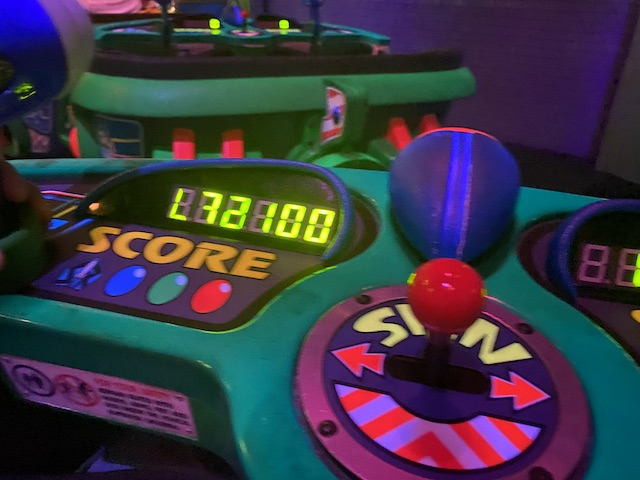
Hmm. Better than before. Still suck, but at least I see some improvement.
Uhh...Zurg is a plastic toy. Will shooting him do any good?
Curious to see if any person has ever actually reached the Galactic Hero level or if that's just there for suckers to ride again and try harder. ;)
Hmm. Which Disney character is lurking in this pond?
I see that they have incorporated "Finding Dory" (Really good movie aside from the climax that just really rubs me the wrong way) characters into the Finding Nemo Submarine ride.
Time for a coaster since....we are IncredibleCOASTERS!!
Glad to see this iconic attraction again.
Super happy to see Single Rider Lines becoming a more common occurance.
So this isn't new since I last visited. But....I never mentioned this on Incrediblecoasters. But they redid the Abominable Snowman on Matterhorn. Logically, it looks better by any metrics. But....something's just nostalgic about the old one. Meh, still the right call.
And yeah. Matterhorn is still a really fun family coaster with a few surprisingly good moments of airtime.
"SPLOOSH!!!"
"ZOMG!!! BEST RIDE EVER (Well, excluding Pony Express of course)!!!"
I know these are just Teacups. But can't Disney at least give these the option of going at least standard Teacup speed (preferably with the ability to go crazy)? Cause these really feel weighted down and purposefully slow.
Hey. A Fantasyland Dark ride with a short line. Why not?
OK. So one thing I've noticed (even during my last few visits despite being so long ago) is that Disney has gone into a sort of "F*CK ANIMATRONICS!!! LET'S JUST UTILIZE THE SH*T OUT OF SCREENS!!!" mode. I never really brought it up when they were first starting to do this. But given that they've freaking updated ALICE IN WONDERLAND to add them, I think it'd be good to address them. In certain limited senses, screens could be very helpful and if utilized correctly, could add a lot more flavor and allow for effects that you could've never done otherwise. However, I really get the sense that Disney is getting too reliant on screens, and is forgetting how to actually make a good animatronic (Why do I get the feeling that if they made Expedition Everest today, they would've never even bothered with the Yeti and that you'd just rush past a screen? And oh crap. They already did it!). Sure, I get it with the Yeti due to how it was always broken and this could be an improvement. But the more they utilize them, the more this feels more like using new tools to innovate and try new ideas they couldn't before and more "How to cut corners and costs to make shareholders more money". Basically, the same issue I have with overreliance on CG in movies, only applied to the theme park world. More specifics on my concern with Disney's screen obsession will be continued later on in this update.
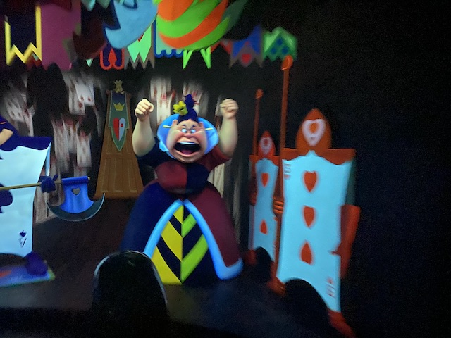
"YOU DID WHAT TO DISNEYLAND BOB CHAPEK!!? UNACCEPTABLE!!! OFF WITH HIS HEAD!!!"
Yeah. We have to. It's a Disneyland Classic. Plus, the line is short.
You know, it's been a while since our last visit, but even longer since our last non-Christmas visit, and our last non-Christmas visit where we rode Small World was even longer. So it's been a LONG time (over a decade) since we rode the regular non-Holiday version of this.
The most sensitive and respectful representation of all these different ethnic groups. =)
Disney showing off their insensitive side, mocking one of the most vulnerable minorities out there! Canadian Park Rangers! How offensive! =P #CancelSmallWorld
"Oh dear. This dream just keeps getting stranger and stranger. I sure do hope that I wake up soon."
It's a Small World or the Can-Can? Which would you rather listen to? Hmm. Perhaps a hybrid is your thing? >=)
"Sorry Jasmine. I was hoping to take you on a magic carpet ride. But all these damn tourists are ruining it! Hey Genie! I'd like to make another wish!"
"Hollywood!? My bad! I was trying to get to Bollywood!"
Hey Disney! You sure you still want this!? =P
Pretty sure this is the safer way to experience the bottom of the ocean as opposed to the alternate methods. ;)
Hmm. We've explored foreign far-off places such as the Arctic, Europe, the Middle East, India, Africa, the Bottom of the Ocean. But the strangest and most foreign of them all has to be the American Southwest! =)
So Toontown is closed off due to the construction of Mickey & Minnie's Runway Railway. This is something I'm REALLY looking foreward to riding due to my love of old-school Mickey cartoons, and my love for dark rides that use the Japanese Pooh technology, and this ride incorporates both. Really looking foreward to riding this next Disneyland visit.
Ooh! There's a new Lion King show. Never saw it, but it seems cool.
Yep. We might as well do another Fantasyland Dark Ride.
"Hey Florida! You guys miss me over there!?"
Insert "Incrediblecoasters is going to hell" joke here.
Hooray! Our fastpass is finally valid! Time for one of the big stars of Disneyland! =)
Yeah. When the last Space Mtn was the Tokyo version, it's good to be on this again since....Space Mtn is the ONE thing that Tokyo doesn't do right.
"Hey! Space Tourism may be expensive as f*ck, but it's still cheaper than current day Disney prices!"
I'm honestly surprised that Disneyland still allows you to take photos of your onride photos. I would've assumed that in their current crusading of Nickeling and Diming consumers for every last penny in their bank account, this would've been one of the first things they cracked down on. Happy that you can at least still do that (for now).
OK. Time to move onto another area of Disneyland.
Aww. That does seem like a nice ad that would really make me want to actually cruise down the Amazon River.
Number of fatalities riding the Jungle Cruise via crocodile attacks. >=)
So now we're waiting on our Indiana Jones reservation. But hey! We can check out Jungle Cruise. No line, and...Disney seemed to have made some changes to it since my last visit.
Hmm. What waterfall is that again?
I found another tourist!
I'm really happy to report that Disney did not decide to remove the Rhino Rape scene on Jungle Cruise. =)
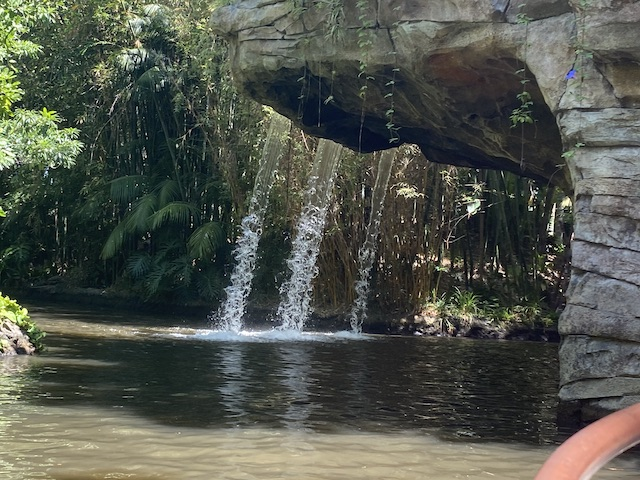
Everyone knows about the backside of water. But how many people have seen the Sideview of Water? =P
So yeah. I knew that they removed this scene, and even mentioned it in a previous update. But the scene with the natives was removed. This was undoubetly the correct thing to do. Portraying them as "SAVAGES!", "CANNIBALS!", and "SPEAR-CHUCKERS!", and treating them in the same way you'd treat the other dangerous animals of Africa, such as lions and hippos? Yeah. Undeniably 100% Racist. I'm honestly surprised they lasted as long as they did. Plus, replacing them with a giant python is not only not racist, but really fits in with the dangerous animals aspect of Jungle Cruise.
They also got rid of Trader Sam since...he's also problematic as well. Instead, they replaced him with an elephant who squirts you. Again, a really smart move and totally the right move. Big thumbs up to the Jungle Cruise changes (Also really happy they didn't try and tie in the movie (haven't seen it yet) to the ride).
Oh look at the time. It's lunch time.
Yeah. This probably is my favorite food at Disneyland that's reasonably priced (by Disney standards).
JASON WANTS THE REDHEAD!!! JASON WANTS THE REDHEAD!!!
Yep. Pirates also seems to always have a shortish line for some reason. So....yeah. We just had to do this next.
I know I wrote about the Redhead change to Pirates of the Carribean back in my Disneyland Christmas 2017 update, and....I still stand by everything I said about this change in that update. Plus, when it comes to Disneyland changes since my last visit, this doesn't even COME CLOSE to the issues I've had with Disney (Huge rant on that coming later in the update).
"Persecuted and thrown in prison all over trying to do a coup....I mean free speech! What happened to this country!?"
I'm pretty sure this is like the ONE thing in Disneyland I still have yet to ever do.
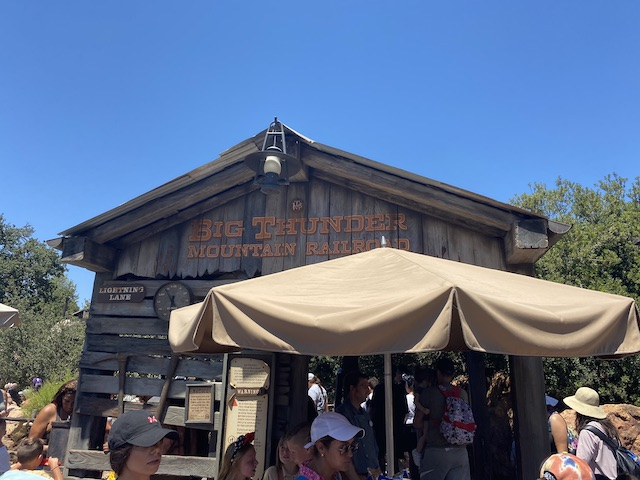
Oh look. Time for the final non-kiddy (and open) coaster for us to do at Disneyland today.
Can I please clean your area Disneyland? I'll even do it for free! =)
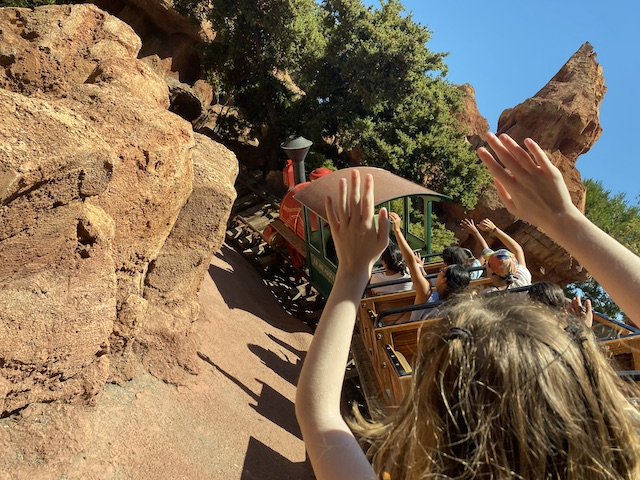
I know it's just a mine train and far from one of the best rides ever, but Thunder Mtn is just a ton of fun.
As long as you aren't an idiot, you'll be fine around Rattlesnakes.
"Excuse me, but do you have a lighter? No, I'm not trying to kill myself! I just want to smoke! The dynamite is just a prop!"
How long until they turn Thunder Mtn into a movie (Please just adapt the Phantom Manor story into a film already)?
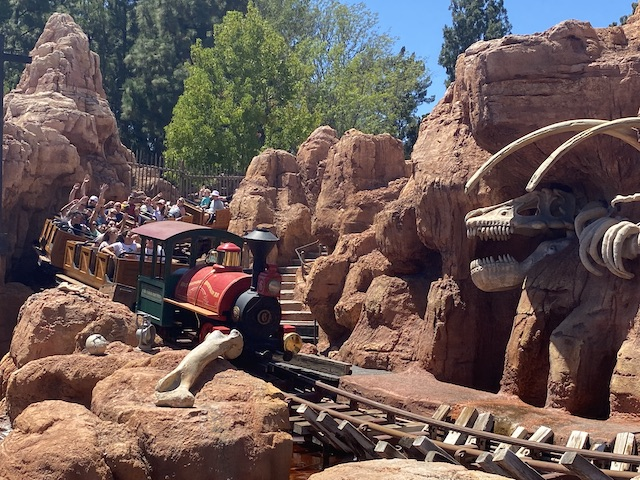
Yeah. Best Mine Train out there (excluding French Thunder Mountain).
Hooray! Our Indiana Jones reservations are finally valid!
Hmm. I wonder what could be lurking in that temple?
Reverse Psychology works every time. =)
Disneyland has added SEVERAL new things and so far, we've just been doing repeats of all the stuff that's already been here. Classics, but still repeats! No more! Time for something actually new!
Yep. Time to FINALLY check out Galaxy's Edge: The New Star Wars Area in Disneyland. =)
Just like how the Wizarding World of Harry Potter is a godsend to Potterheads to make them cum, this is the same thing, only to Star Wars fans. Me, I enjoy both franchises. But I'm not a huge fan of either. So neither really grabs me in the same way it would a die-hard fan.
Yeah. There was essentially NO WAY to get reservations for this without paying for an expensive individual Lightning Lane (*Sigh* I REALLY do not like Disney's changes to fastpass. Yeah. It's no worse than other parks Fastpass system. But the system Disney had was so good and worked so well, that this felt like a downgrade for the sake of nickling and diming guests, and I'm NOT happy about that). So....yeah. This is going to be a BRUTALLY long line. But hey. At least we can make a reservation for the Millenium Falcon.
It was long, but not NEARLY as long or unbearable as I expected it to be (I expected it to be worse than 90 minutes). And the INSANE attention to detail in the line really makes it a lot more bearable.
"Bleep: Please be patient. Trust me. This'll be one of the best rides ever. Thanks for waiting in that hugeass line."
"*Sigh* I know you're all just tourists and that NONE of you are trained for war. But the Empire is extremely strong, and....desperate times call for desperate measures".
OK. We move out of the line and into the next pre-show. Yes, it's quite a lot. But you know what? It works. It f*cking works. It doesn't feel tedious and trying too hard. Every pre-show really helps with the ride.
Once I'm done with this meeting, can I take these classified Rebel documents home with me and then hoard them in my bathroom? =P
"Remember. They may look intimidating, but Stormtroopers are notoriously clumsy with horrendous aim. You'll be fine."
So the ride itself is.....really strange. It's one of those.....INCREDIBLY hard to describe rides. The closet I can come to describing this ride is....that it's a mix of Spiderman and Japanese Pooh, with a splash of Mystery Castle (apparently there's a drop ride portion of the ride, which....I felt a drop. But I did NOT expect that). REALLY fun ride and definately in our Top 10 Dark Rides.
Even when you venture off to another galaxy, you still can't escape the trophy hunters! >=)
"THIS IS SO MUCH BETTER THAN THE OVERPRICED PIECE OF PLASTIC AT UNIVERSAL FOR HARRY POTTER!!! THIS OVERPRICED PIECE OF PLASTIC FOR STAR WARS COMES IN COLORS!!!" =)
So Universal has the delicous but overpriced drink known as Butterbeer in the Wizarding World of Harry Potter. Disney of course, has to compete. So they offer Blue and Green Milk here as their special Star Wars drinks. And I just have to try.
So I'm REALLY not a fan of milk. But luckily for me, this drink has NOTHING to do with milk, despite the name. If I had to describe the drink, the closest I can describe it would be that Blue Milk tastes like a Tropical Smoothie, only much thinner and without the thickness of a smoothie. A drink you can chug, but with a very sweet fruity tropical taste. I'm not gonna lie. I do prefer Butterbeer. Butterbeer > Blue Milk. But both are REALLY good. While I don't have any plans of going back to Disneyland, I would LOVE to make this at home (just as soon as I can afford to get a new blender lol).
*gasp* "JEDIS!!? YOU BLEW UP OUR DEATH STAR!!! WE WILL F*CKING KILL YOU!!! JUST AS SOON AS WE LEARN HOW TO AIM A TARGET!!!"
I know its a tiny mundane thing, but I LOVE how well this water fountain is themed to blend into Galaxy's Edge (and I appreciate it working for reusuable water bottles).
All right. We still have some time. What else can we do? Hmm. Tom Sawyer's Island! Haven't done that in a longass time!
"Arr! You two fools be looking for treasure in all the wrong places!"
"HELP!! I FOUND MYSELF TRAPPED IN DISNEYLAND JAIL!!!"
I got the side-view of one of the bridges here.
It's a lot of fun here. Partially since....there's not very many people here lol. =)
I know its just a bridge, but the barrel bridge is still pretty cool. Especially since I don't think there's any other barrel bridges out there.
Uncommon view of Splash Mtn from Tom Sawyer's Island (I've got A LOT to say about Splash Mountian later on in this update).
Time to head back to Galaxy's Edge.
It truly is remarkable just how well themed this area actually is. I may not be a huge Star Wars fanatic, but this area truly is phenomenal.
If you want more information on Galaxy's Edge, I HIGHLY recommend this video that I feel does a GREAT job discussing the land and the effect it had on the industry (feels weird that this is the 2nd time I've embedded a Wendover Productions video into an update lol)
And our reservation for the other ride in Galaxy's Edge is finally valid, Millenium Falcon.
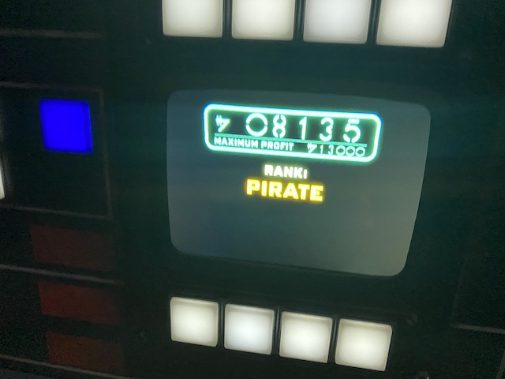
So Millenium Falcon is a ride where....you have to land the Millenium Falcon. And there's obstacles. You can be either a pilot, an engineer, or a gunner. I forgot what I was, but it was fun. Even if I had to cooperate with strangers lol.
It's a really fun and creative simulator. But I will admit that this felt more geared for....the Star Wars Fanatics. I certainly liked it. But I bet those people would LOVE it!
OK. Time for some more Fantasyland Rides.
This actually was rennovated since my last visit, going from "Snow Whites Scary Adventueres" into "Snow White's Enchanted Wish". Gee, I wonder if they're trying to make the ride less scary to kids.
So aside from updating a few animatronics and adding many different screens (A few of them feel like cutting corners to save money, but most of them feel like they're helping the ride), the one thing they fixed was the ABRUPT ending where it ends with the Evil Queen dying via falling off the cliff & crushed by boulder only to have it read "And they lived happily ever after" as you exited the ride. No, they really dragged out the Happy Ending. Not only do they show the Wake-Up Kiss, but also them going off to the castle to live happily ever after. Yeah. This definately was a needed update.
And since we're doing Fantastyland Dark Rides, time for the most popular one.
Why is this one so popular? Because this one makes you FLY!!!
So let me get this straight. A classic beloved E-Ticket taken from a forgotten film with all the racist problematic elements successfuly scrubbed from the ride is simply too much and has to go.
But not only keeping a ride from another racist problematic film (The main difference between this and "Song of the South" is that "Peter Pan" is a good film despite its racist parts, while "Song of the South" primarily SUCKS aside from the few short Brer Rabbit cartoon scenes that Splash Mountain is based around), but actively SHOWING THE RACIST CHARACTERS ON THE RIDE!!? SERIOUSLY DISNEY!!? THAT'S OK!!?
Uh....Apprently I just learned that Peter Pan might be closing. Not sure. I keep getting conflicting information. Some articles say that Peter Pan is getting replaced by an "Up" ride. Certainly wouldn't be too surprising if so, since....the direction of the company. And....I guess other people have made the same point I angrily made just now. But I've heard nothing about this on the actual Disneyland or Disney World websites, which leads me to believe that first article to be Fake News and the wishful thinking of certain people who desperately want it gone for....the reasons I just yelled about. Though I do think an "Up" ride would be a good hypotheical that I'd be willing to support if they did it right.
Oh yeah. Still haven't done this one yet. Gotta hit that while we're here.
"Hey look! I found some tacky carnival games over in Disneyland!"
"Oh crap! I have to get this sword out of the stone! I don't want to get thrown in Disneyland Jail for jamming the sword in the stone!" =0
Aww. Standard cliche couples photo.
I know I'm pretty spoiled by Mexican Food since....there's so many good Mexican places in California. But this is still pretty good.
OK. Our reservation is ready. Time for another Disneyland Classic.
Oh dear. Look at all the people who just couldn't take it with the direction Disney's been going!
Bah. Those guys aren't in nearly the danger they think they are.
"Hey motherf*cker! I've got a B&M named after me! Do you!?" =P
Once again, it's REALLY been a long time since we last did the normal version. Nice to see the ride not decorated for Christmas & Halloween.
So that's what awaits me after death? Dancing? Oh, thank god. I thought it was gonna be nothing but darkness, oblivion, and nothingness for all of eternity!
Someone send this man to Disneyland Jail for animal cruelty (starving his poor dog)!
Those hitchhiking ghosts really aren't gonna have a fun time with us. >=)
I've always been a huge fan of the general concept, and just really enjoy it.
Even in his imagination, Mickey can't get his mind off of cleaning. >=)
PIRATES HAVE INVADED MICKEY'S IMAGINATION!!!
And of course, all the Disney Villians genuinely make this show better.
Yeah. The one downside to this version is....there's far less villians here than in Florida (Never actually saw the Florida version in person. Only on Youtube). Bummer, but it's still pretty cool.
"OH NO!!! DRAGON MALIFICENT IS ATTACKING!!! QUICK MICKEY!!! BLOW HER UP!!!"
All the survivors of Fantasmic celebrate. ;)
Hmm. I wonder why we're in Critter Country?
OK. So in 2020, Disney announced that Splash Mountain at both Disneyland and the Magic Kingdom in Disney World would be rethemed to "The Princess and the Frog" as "Tiana's Bayou Adventure". It's been a very controversial decision with A LOT of people objecting. And what a surprise, I'm one of the people who STRONGLY objects to this change (I even got myself a Splash Mtn T-Shirt due to this).
WARNING: THE REST OF THE SPLASH MOUNTAIN PHOTO CAPTIONS WILL EXPLAIN WHY DISNEY IS DOING THIS AND MY REASONS FOR OBJECTING. AND AS SUCH, THESE CAPTIONS WILL NOT ONLY TALK ABOUT POLITICS, BUT ALSO RACE!!! IF YOU DON'T WANT TO HEAR THAT STUFF DISCUSSED ON INCREDIBLECOASTERS, SKIP DOWN TO WHEN THE SPLASH MOUNTAIN PHOTOS END (Apologies for them being low quality. The flash was off. I didn't want to be rude to others, but I regret that in hindsight given that these are my final Splash Mtn photos)!!!
This retheme honestly feels less like a decision made to make Disneyland better and more of a decision to help beef up Disney's image as a progressive company (Please ignore all the worker issues we're having and the fact that we didn't pay a living wage until pressured to by Bernie Sanders and Ro Khanna). No, let's instead focus on empty soulless virtue signaling, to please certain kinds of people (these people who argue about how problematic it was never had a problem with it until they were told so and only think that now because they lack critical thinking skills and it’s trendy to say so). Plus, now we can further try and pretend that Song of the South is erased and never existed!
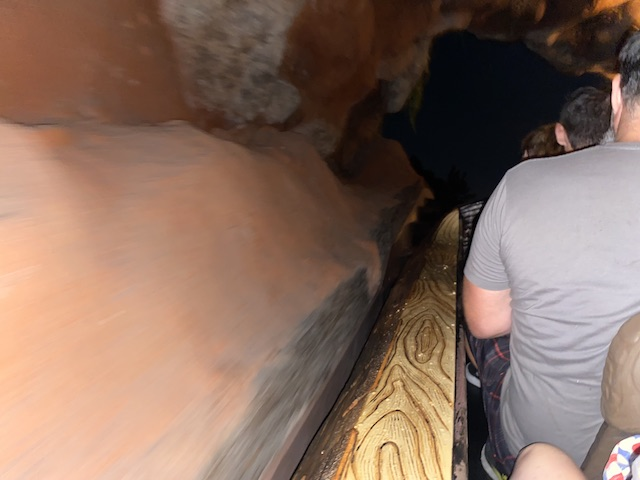
Dear Disney, you will NEVER erase Song of the South. It was WAY too successful and big for it EVER to go away. Retheming Splash Mountain isn’t gonna change that. And neither is trying to censor and surpress "Zip-A-Dee-Doo-Dah" at every chance you get!
Quit pretending it doesn’t exist, and just acknowledge it and put it on Disney+ as an R-rated film solely for adults with the disclaimer.
Song of the South sucks, and not just because it's racist (Any Anti-Woke Asshole trying to argue otherwise can shut the f*ck up. I wish I was joking. But I unironically saw these people arguing that. If you seriously believe that THIS isn't racist, you're either A: Racist, B: Stupid, or (Most Likely) C: Both). But also because it's just a boring f*cking movie. Seriously, any part of movie that wasn't the Brer Rabbit cartoon or "Zip-A-Dee-Doo-Dah" was more boring than watching paint dry. It's genuinely a bad movie (I feel like I'm one of the few people who's actually seen Song of the South). And yet, despite ALL THAT, it should STILL be on Disney+ as an R-Rated Adult Film. Yes, I'm very anti-censorship and very pro-film preservation/restoration. Seriously Disney.
Taking a quick break from the Splash Mountian Rant/Essay to just observe the Disneyland Fireworks.
Ironically, the best way to minimize interest in the original Song of the South would be to remake it. I’m f*cking serious. How about instead of remaking your most successful movies like Beauty and the Beast and Lion King, how about you remake the movies that flopped and bombed?
Those remakes may have made a ton of money (dear idiot viewers, STOP supporting bad live action remakes and incentivizing Disney to make MORE of these abominations. Luckily, I think Live-Action Little Mermaid SIGNIFICANTLY underperforming will stop them. And no. It's not because Ariel is black in it! That film looks really bad, but Ariel's race is NOT the reason why, you racist Anti-Woke crybabies!), but they will NEVER replace the original Beauty and the Beast, or Lion King, or whatever.
However, if you remake something something people don’t like, you can fix the flaws of the original and turn the remake into something beloved. And then it could ACTUALLY replace the original (The Super Mario Movie of this year replacing the sh*tty Live Action 90s version is a perfect example).
If Disney cut Uncle Remus completely, cut every single Live Action character in the movie and make it a purely animated film, replaced the racist tar baby with the beehive like they did on the ride, make the movie solely about Brer Rabbit, Brer Fox, and Brer Beat, and reincorporate Zip-A-Dee-Doo-Dah into it (plus the other songs) without Uncle Remus, pretty sure that’d shut people up about the original film. Far more than your excessive denial over it ever existing.
Oh wait. That was Splash Mountain. They did EXACTLY that, and it was one of the most beloved and classic rides at Disneyland (Hence such strong feelings for them removing it, especially for reasons that are not NEARLY as good as they think they are). The same could've EASILY been done (probably wouldn't work now thanks to Disney's own actions). Screw Live-Action Remakes of Classic Animated Films! Make Animated Remakes of Crappy Live-Action Films! =P (OK. Don't think that'd work for any other movie aside from "Song of the South").
“Oh! That could never work! You could never adapt a story that has racist origins!” ='(
- Some Stupid Twitter (I refuse to call it X) Wokescold
A: The Jungle Book has entered the chat. No seriously. The original Jungle Book is EXTREMELY RACIST!!! And yet. Disney adapted that.
"But that was in 1966! Disney didn't know any better! Plus, that film has its own racist moments. We certainly wouldn't do that nowadays!"
Disney literally made a Live-Action Remake of Jungle Book in 2016. And in case you try and argue that we've gotten better on this between then and now, Disney is CURRENTLY making Jungle Book 2! RIGHT F*CKING NOW!!! Disney has NO PROBLEM adapting stories with racist origins! (BTW, I'm not saying that Disney shouldn't do Jungle Book adaptations due to that stories racist origins. I'm just pointing out the hypocrisy. I MASSIVELY disagree with the few people arguing that, but at least they're f*cking consistant. So points for that at least).
B: The Brer Rabbit story originated in West Africa (I highly recommend reading the article I just linked. Not just skim it. It's really good and should be read by anyone interested in the actual Brer Rabbit story Splash Mtn shows). Those who were taken here as slaves brought the story over when kidnapped. It evolved in America, incorporating the Briar Patch from some story from the Cherokee tribe from their iteration. Then white people (including Disney) took their story, and made it all for themselves. And now, white corporate executives, uncomfortable with what their grandparents did, want to completely erase this story that came as original African culture oral traditions from those we enslaved. Their story must die because of racist people from the 1940s.
Am I crazy for thinking that that’s problematic?
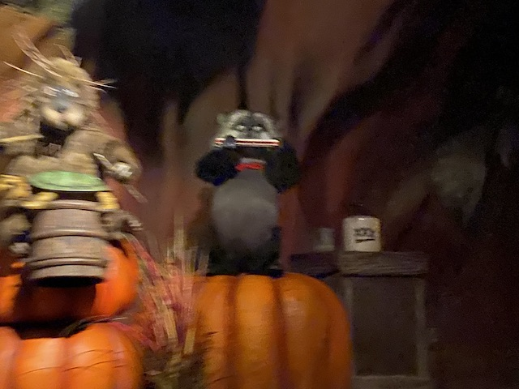
"OK. You've made your point that Disney is replacing a beloved classic and that their reasoning for doing so is far shakier than they'd like to admit. But why not give Tiana's Bayou Journey a chance? I think it looks really cool. I love Princess and the Frog and think it'll be even better!"
First off, you can give it a chance. You can be excited about it. I'm not stopping anyone from feeling however they want about that. And despite this angry rant/essay, I actually really like "Princess and the Frog" and find it to be an underrated movie. HOWEVER...
Everything about not only "Tiana's Bayou Journey", but nearly EVERYTHING involving Tiana and the Princess and the Frog isn't really about the movie. The movie itself has A LOT of mixed reviews, which is why for such a long time, Disney sort of brushed the movie under the rug (aside from parading Tiana as part of the Disney Princess Lineup). And it's why I called it underrated.
What do I like about "The Princess and the Frog"? Well, the villian is AWESOME!!! I'd honestly call Dr. Facilier the last GREAT Disney Villian (and his song kicks ass! The voodoo imagery is really cool and unique for Disney. I love the design of the Friends on the Other Side (BTW, Dr. Facilier also has the coolest Disney Villian deaths). I love how Lawrence goes from the trustworthy sidekick to Prince Naveen to flipping, stabbing him in the back, and working for Dr. Facilier due to him snapping and being fed up of being mistreated. Moving away from the villians, I love Tiana's workaholic nature and found that relatable. I loved Charlotte, and Louis was a fun sidekick.
Most of the stuff I listed as reasons I really liked "Princess and the Frog", do NOT seem to be part of "Tiana's Bayou Adventure". The ride synopsis literally reads the following.
The attraction picks up right after the end of "The Princess and the Frog" film. In the queue, you'll discover Tiana has expanded her business with Tiana's Foods, an employee-owned cooperative, and transformed an old salt mine into both a farm and kitchen. As they prepare for an exciting Mardi Gras celebration with the community, they discover they are missing a key ingredient.
That right there erases A LOT of what I really enjoyed about the movie. And....help Tiana find a missing ingredient for Mardi Gras? I'm NOT convinced. I do NOT think that this has the weight of replacing a CLASSIC! Plus, All the Villian stuff I loved.....GONE!!! Dr. Facilier (the best part of "The Princess and the Frog") is NOWHERE in this ride. And I'm very skeptical that Tiana's workaholic nature will be present on the ride (I'd LOVE to be wrong about that. Please prove me wrong Disney). Seems like they'd want to erase that, to show how she grew in the movie. Which...really works in the movie. But post-movie, Not so much. The BEST I can reasonably hope for is some good moments from Charlotte and Louis.
I know when this was first announced in 2020 (NOT A F*CKING COINCIDENCE), one coaster friend tried to be optimistic, suggesting the final lifthill of the ride to the big drop be Dr. Facilier's friends from the other side banging their drums as it shouted "ARE YOU READY!!?" while going up the lifthill. That actually sounded like a cool idea. If they went with that, I'd still be pissed about them removing such a classic on shakey grounds. But the replacement would UNQUESTIONABLY be better than what they have planned. And not only that, it would genuinely FEEL like a "Princess and the Frog" ride.
Honestly, everything I've seen from not only this, but every way Disney has utilized "The Princess and the Frog" since it came out, it really feels like Disney just wants to erase all the good stuff about the movie and just use Tiana as a black face to fill in to be a standard generic princess, only black so that they can be good on race by increasing representation. The ONLY time I've seen them utilize Dr. Facilier was including him in the cheesy "Villians Tonight" show on the Disney Cruise Line (and just having him in the Disney Villian Lineup).
And to further prove my point, this HUGE change feels like a cheap tie-in to a new upcoming show based on the movie, "Tiana", which I think is coming to Disney+ around the same time as this ride opening (as well a new resteraunt, Tiana's Palace. Not gonna lie. I am looking foreward to the resteraunt as the food in the movie looked really good).
On top of that, Disney doing reskins....has not turned out well. I'm concerned that they're just going to give this the same attention that Pixar Pier got, specifically when they turned CA Screamin into Incredicoaster (Spoiler Alert for my thoughts on that later in this huge update). Because to go full circle to my very first argument at the beginning of this essay, I do NOT trust Disney to be doing this to actually make Disneyland better. But rather, a decision to help beef up Disney's image as a progressive company (and tie into their Disney+ shows). So I'm worried that they'll just half-ass this since....they don't actually care. Could I be wrong and they really go all out? Sure, I could be. And that certainly would be better (though I still would NOT be happy at their callous decision of removing Splash Mountian because shallow virtue signalling).
Honestly, if I wanted to give a real upside to this decision, it would be this. Tokyo Disneyland just landed another special and unique attraction. Because Splash Mountian is staying over there, and they've confirmed it's not going away in the land of the Rising Sun. Arigato Tokyo Disneyland! So....yeah. Japan is the big winner in all of this. And with all that said, I will see you in Japan, Splash Mountian.
Well, that was a really fun day at Disneyland. I'm looking foreward to....what's that!? There's more!?
Yep. We squeezed in a viewing of Great Moments with Mr. Lincoln since....it had no line and the park still was open for another hour. So why not!
So I technically had seen this before. But WAY back when I was a kid. In the Pre-Incrediblecoasters Days. And I completely forgot about it. So....it'll be like me viewing it for the first time.
It was kind of cool. I know I tend to roll my eyes at blind patriotism, and will scoff at people trying to prod me into it, usually pointing out the many ways we were horrible throughout history (and still are to this day). But I genuinely enjoyed this show. And while I'm not gonna pretend that I'm a blind patriot now, I still found it to be a good show that I think does its job well. Hey Florida! You should REALLY get a clone of this ride *Hint hint* ;)
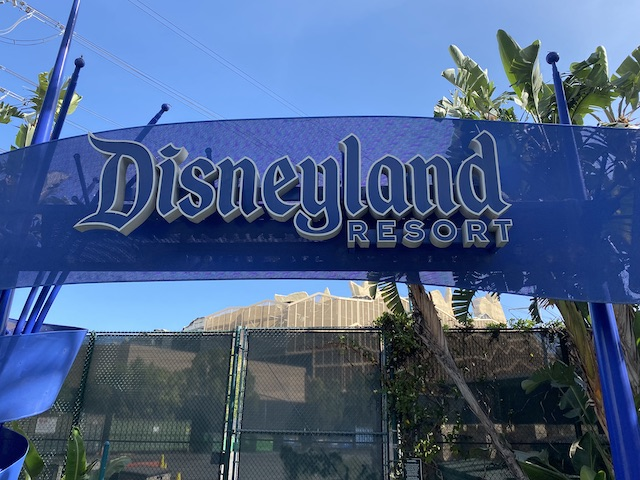
All right. Time for Day 2 at the Disneyland Resort. But first, we've got some business to take care of before getting into the park!
Hmm. I wonder what we're doing right by Mickey's Hat?
Yep. We're doing breakfast at Goofy's Kitchen.
So Goofy's Kitchen is a character breakfast buffet where you get to eat dinner with various Disney characters. We did it once over 15 years ago. But we're doing it again now because....my very young neices are also visiting and....they want to see Goofy, and all the other Disney characters. It's a very fun gimmick.
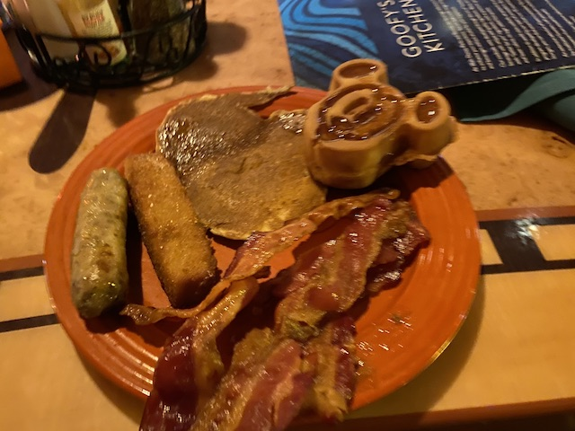
The gimmick is fun, but judging it as an actual resteraunt....yeah. It's not the best quality.
Downtown Disney showing off a lot of the recent things Disney has made.
"HEY LEGOLAND!!! LEGO MALFICENT GOT LOOSE!!! WE NEED HER SLAYED NOW!!!"
All right. So yesterday was checking out all the new stuff at Disneyland. Today's California Adventure day.
There is quite a lot of other new stuff to check out here today. So yeah. We've got ourselves a busy day ahead.
You know, I think the Grizzly Bear Mountain might be the only icon from California Adventure's opening day still standing.
Good god! I knew fisherman pulled out all sorts of crap with their catch, but this is INSANE!!!
After Goofy's Kitchen, no thanks. I'm stuffed.
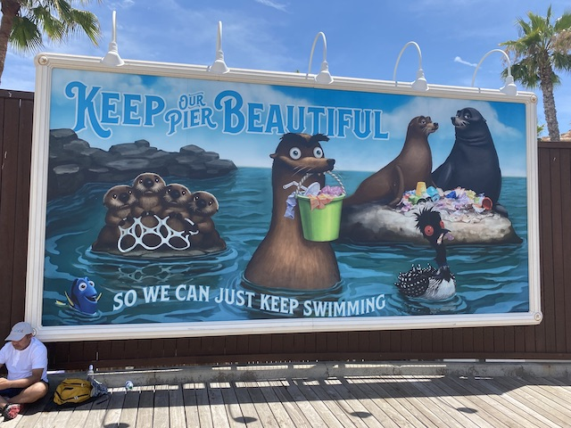
That's what the janitors are for! =P Though seriously, I wish signage like this would go up at more of the local beaches here.
OK. First ride of California Adventuere is....The Little Mermaid?
Yeah. It's not a staple or anything. But it's got a short line and we're waiting on some reservations. Why not?
You know, I've gone snorkeling a handful of times, and I have NEVER seen anything like this! Do I need to start SCUBA diving and go deeper to see sh*t like this? ;)
Hello Pat Carrol. How's it going?
Yeah. It's far from the best dark ride ever. But it's still a fun little ride worth a spin if there's no line.
All right. So perhaps the oldest "new addition" would be Pixar Pier replacing Paradise Pier. And yeah. This was just as....tacky and lackluster as I predicted.
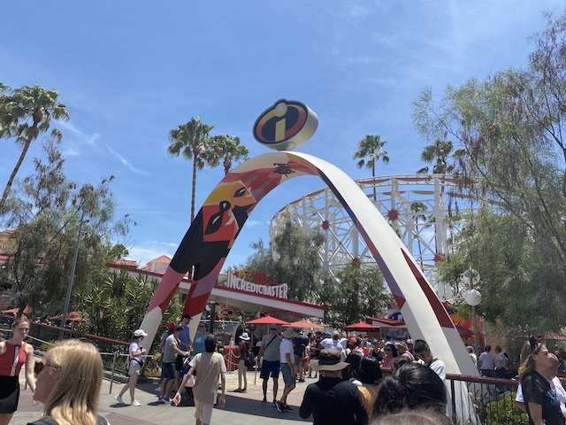
All right. Time to check out an E-Ticket Attraction. Incredicoaster (Hmm. That name sure sounds similar to the name of a website I'm very familiar with). =P
Yeah. This is needed thanks to this being the one ride out of Jason's range (gotta grow that lol). Very much appreciated Disney. =)
Sorry Disney, but California Screamin > Incredicoaster.
So the main issue is....the theme just feels....too tacky, and....not up to Disney quality.
Seriously. Aside from a few statues of the Parr family in the tunnels (now painted red) and brake run, the rest of the theming is audio of the Parr family screaming about how they need to get back Jack Jack. This....honestly feels on par with the music on X2! No really! I expect better theming from Disneyland than to be on par with Six Flags Magic Mountain!
But with that said, it's still a really fun ride as....California Screamin....I mean Incredicoaster, is a genuinely fun coaster that'd be really good naked and without any theming (unlike most Disney coasters). So I still enjoy the ride. =)
And it's not just Incredicoaster. All of the Pixar Pier feels....more cheesy than I would expect from a Disney park. It just doesn't work. Paradise Pier had a much nicer atmosphere and felt like it worked much better.
"SO MANY OF THESE DISNEYLAND CHANGES MAKE ME MAD!!! GAH!!! Oh look. My rage produced a hot dog. Want it?"
But hey. One upside of Pixar Pier is that.....Toy Story Mania now fits like a glove in here. =)
"YOU WANNA JOIN THE ARMY!!? WELL THEN YOU BETTER BREAK THOSE PLATES MOTHERF*CKER!!!"
Still one of my favorite dark rides. Just a big fan of this ride.
Yeah. It's partially because this is one of the few shooting dark rides I'm actually good at. But even so, the games are really fun and the spinning between games is just a lot of fun.
It sure is. =)
Hello California Adventure Street Car. =)
All right. Our Soarin reservations are ready. So Soarin has....definately experiened a backlash with MANY people wanting Soaring Over California back. I know I initially mentioned prefering Soarin' Over the World since....more locations. More variety. California is too local. And I stand by that (plus, I really like a lot of the scents on Soarin). But I'm not gonna lie. Some of the shots feel....kind of wonky (The shot of the Eiffel Tower is off), and some of the transitions just feel too tacky. But honestly, the best solution? Have both! Have one half play Soarin Over California, and the other play Soarin' Over the World. Let the people decide which is more popular! More choice is better! =)
Hello Carthay Circle Theater.
Got ourselves a reservation for the Guardians of the Galaxy. OK. Time for some other stuff.
Hmm. I wonder if there's anything else that's new that we haven't done yet?
Yep. Time for us to check out the Avengers Campus.
Now much like Harry Potter World and Galaxy's Edge, I'm ALSO not a die-hard Marvel fan (I've only seen the cream of the crop must see MCU Movies. There's still a TON of them I have yet to see). So I'm also not as crazy for this as the Marvel fans. But at the same time, it's still a really cool area that I genuinely like. =)
Some sort of ancient....dodecahedron from Doctor Strange. Sorry, not super familiar with this franchise, so its importance is lost on me.
And of course, we have to do the one cool new ride for Avengers Campus, Web Slingers.
So this is a shooting dark ride themed to Spiderman, which I have to admit is pretty cool.
Honestly, the coolest aspect of this ride is....that there's no gun or anything. You shoot by shooting webs out of your fingers much like when you pretended to play Spiderman as a kid. I REALLY loved that aspect and really made this ride work. =)
For as much as I like this ride though, Universal's Spiderman Ride > Disney's Spiderman Ride unquestionably.
I forget which score is mine, but another fun factor is....I'm actually good at this shooting dark ride too! =)
Thank you for being such a cool addition to Disney's California Adventure.
Yeah. We still have time to check out Carsland.
I know it sounds INSANE to wait in the normal line for Radiator Springs Racers, but.....with how well it worked out for Rise of the Resistance, I think we can do this.
Look. I get people wasting coins (usually pennies) in these due to stupid superstitions. It's still dumb and a waste of money, but at least pennies are essentially worthless. So whatever. But an ACTUAL F*CKING DOLLAR BILL!!!? ARE YOU SERIOUS!!? I so would've just picked it up and snatched it if it wasn't for the fact that I'd probably get yelled at by the park if I did.
Bet the traffic for that wedding was horrendous.
UGH!!! So I DEEPLY regret getting in this line. Not only was the wait HORRENDOUSLY long (like I expected), but it was EVEN LONGER THAN EXPECTED THANKS TO BAD OPERATIONS!!! ARE YOU SERIOUS!!? ARE YOU F*CKING SERIOUS!!? OPERATIONS ON PAR WITH SFMM AT THE DISNEYLAND RESORT!!? NOT FUCKING ACCEPTABLE!!! Seriously, this SUPER LONG LINE moved at snails pace. Combine that with multiple break downs and lollygagging and....GAH!!! THIS LINE TOOK OVER 90 MINUTES LONGER THAN EXPECTED!!! AND WE HAD TO MISS OUR GUARDIANS OF THE GALAXY RESERVATION BECAUSE OF IT (I genuinely f*cking hate that they enforce the return time expiration on Fastpasses now. I really f*cking hate the Genie+ & Lightning Lane system)!!! LESSON F*CKING LEARNED!!! ALSO, FIX YOUR F*CKING OPERATIONS DISNEYLAND!!! >=(
Ugh. So now I'm in a REALLY bad mood. Hoping that this ride on Radiator Springs Racers will cheer me up.
At least it's still got some really good theming.
Hey George Carlin! How's it going!? =)
So this ride is fun, but yeah. This was unquestionably my least favorite ride on it simply due to being in such a sour mood due to the horrible operations.
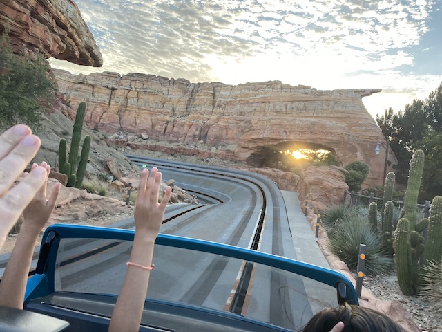
"Hey! I've done this drive many times during my many times roadtripping through the American Southwest!"
Well, at least it's still a really good ride (I just love rides that use the Test Track technology).
I was just expecting a standard hot dog place. But hey. The hot dogs from Award Weiners really exceeded my expectations. Very happy with the food here.
And for our final ride this trip, we have to do Mickey's Philharmagic.
I've been saying that this ride needs to come to California forever. And while this isn't the spot I would've put the ride, I'm just happy it's on the West Coast at all. =)
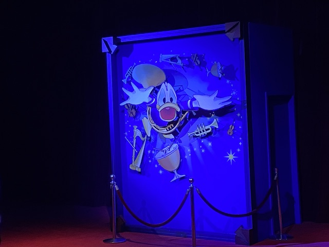
Of course Donald Duck is the actual character you follow throughout the ride. Mickey is too much of a Mary Sue to root for (with the exception of Black & White Original Mickey). ;)
"Hey look! I found another Mickey Mouse!"
Well, that was my most recent Disneyland Resort visit. I'm very happy to have visited. And while I will admit that there are a lot of changes I'm unhappy about (Pixar Pier, The New Fastpass Sytstem, Radiator Springs Racers operations, and ESPECIALLY replacing Splash Mountain). But at the same time, there are plenty of changes I am pleased with (Galaxy's Edge and Avengers Campus). And on top of that, I'm just really happy to get on a lot of cool Disney Classics and just had a blast. I'm not sure when my next visit will be, but whenever that is, I'm really looking forward to Mickey & Minnie's Runaway Railway.


{kind=link}